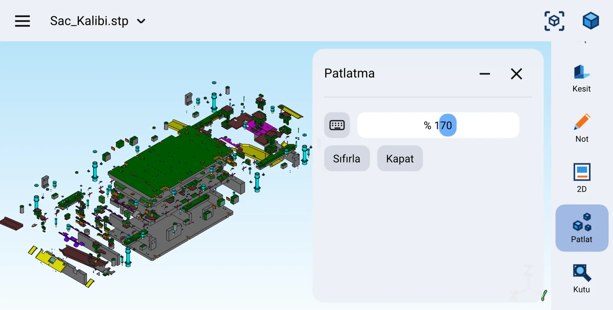
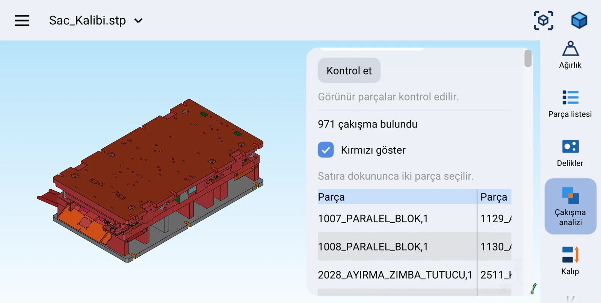

Ölçüm, ağırlık ve kütük
Köşe, kenar ya da yüz seçerek ölçün. Kutu ölçüsü, kütük ölçüsü, yüzey alanı, hacim, ağırlık ve ağırlık merkezi tek panelde; malzemeyi ve işleme payını siz belirleyin.
STEP, CATIA, SOLIDWORKS, NX ve daha fazlasını telefonunuzda ve tabletinizde açın. Ölçün, kesit alın, analiz edin, 2D resim çıkarın. Dosyalarınız cihazınızdan hiç çıkmaz.


Başlıca CAD ve ağ biçimlerini doğrudan açar
.CATPart .CATProduct.sldprt .sldasm.prt.prt.N.stp .step.igs .iges.x_t.jt.3dxml.stl.obj.wrlToplantıda, atölyede, sahada. Tek bir parçayı ya da yüzlerce parçalı bir montajı akıcı biçimde döndürün, ölçün ve inceleyin. Başka bir CAD programı gerekmez.
Köşe, kenar ya da yüz seçerek ölçün. Kutu ölçüsü, kütük ölçüsü, yüzey alanı, hacim, ağırlık ve ağırlık merkezi tek panelde; malzemeyi ve işleme payını siz belirleyin.
Seçili parçadaki delikleri çapa göre gruplar; çap, adet ve derinliği listeler, her çapı modelde kendi rengiyle gösterir. Tabloyu tek dokunuşla kopyalayın.
Modeli X, Y ya da Z düzlemiyle kesin, düzlemi eğin. Montajı tek kaydırıcıyla parçalarına ayırın.
Altı görünüşten ölçülendirilebilir resim çıkarın. A4 ya da A3; PDF veya DXF olarak kaydedin.
Ok, yazı ve bulut işaretleri koyun. Her sayfa kamera bakışını saklar; hepsini tek PDF raporda toplayın.
Farklı parçaları adet, kütük ölçüsü, birim ve toplam ağırlıkla listeleyin; Excel için CSV olarak kaydedin.
Parçayı adıyla bulun. Gizleyin, saydam yapın, yalnız seçiliyi gösterin ya da yeni sekmede açın.
Gölgeli, tel kafes ve gizli çizgi; perspektif ya da ortografik izdüşüm; standart görünüşler.
Açık modeli STEP, IGES, 3DXML, OBJ, VRML ya da STL olarak kaydedin.
Tek uygulama, iki ekran. Tek parmakla döndürün, iki parmakla kaydırıp yakınlaştırın; uzun basışla bağlam menüsünü açın.
Sadece bir görüntüleyici değil. Tasarımı toplantı masasında, tezgâhın başında ya da müşterinin yanında denetleyin.
Kesit düzlemini X, Y ya da Z ekseninde kaydırın, iki eksende eğin. Kesilen yüzeyi dolu ya da taralı gösterin; kaç parçanın kesildiğini anında görün.
Tek kaydırıcıyla montajı merkezden dışa doğru açın. Patlatılmış görünümde parçaları seçin, inceleyin, ekran görüntüsü alın.

Hareket edecek parçaları gruplayın, her gruba yön ve strok verin. Oynat ile kalıbı kapalı konumdan açın ve geri kapatın.

Çekme yönünü ve en küçük açıyı seçin. Yeşil yeterli, mavi ters yönde yeterli, kırmızı yetersiz ya da dik duvar demektir.

Görünür parçaları ayarlanabilir toleransla denetleyin. Çakışan parça çiftleri derinlikleriyle listelenir, çakışan bölgeler modelde kırmızıyla çizilir.

Seçili parçadaki delikler çapa göre gruplanır: çap, adet ve derinlik. Her çap modelde kendi rengiyle görünür.

Ön, arka, sol, sağ, üst ya da alt görünüşten resim çıkarın; mesafe, yatay, dikey ve çap ölçüsü ekleyin.

Modeli eski sürümüyle karşılaştırın; eklenen, silinen, değişen ve yeri değişen parçalar renklenir.
Bükülmüş sac parçanın düz açınımını çıkarın, kesim çizimini DXF olarak kaydedin.
Menülerde dolaşmaya gerek yok. Komut kutusuna ne istediğinizi yazın ya da mikrofona söyleyin; ÇİZEN Viewer Max gerisini halleder.
Konuşma, cihazınızın kendi tanıyıcısıyla yazıya çevrilir. Ses kaydedilmez, hiçbir yere gönderilmez.
“önden” · “üstten” · “izometrik” · “sığdır”
“X ekseninde kesit al” · “patlat” · “toparla”
“1005’i gizle” · “sadece pimi göster” · “hepsini göster”
“ölç” · “çakışma analizi” · “parça listesi” · “teknik resim”
Gizli tasarımlarla çalışanlar için tasarlandı. ÇİZEN Viewer Max dosyalarınızı hiçbir sunucuya yüklemez; açmak, ölçmek ve analiz etmek cihazınızda olur.
Gizlilik Politikası'nı okuyunCAD dosyaları yalnız cihazınızda açılır; bize ya da başka bir sunucuya gönderilmez.
Sesli komutlar cihazınızda yazıya çevrilir; ses kaydı saklanmaz, gönderilmez.
Kayıt olmanız ya da e-posta adresinizi vermeniz gerekmez.
Uygulamada reklam, kullanım analitiği ya da izleme aracı yoktur. İnternet yalnız abonelik doğrulaması için kullanılır.
Tüm biçimler ve tüm araçlar her planda. Önce 3 gün ücretsiz deneyin.
Size uyan planı seçin. Güncel fiyatlar uygulamada ve mağazada, ülkenizin para biriminde ve vergiler dahil gösterilir.
Abonelik her dönemin sonunda otomatik yenilenir; mağaza ayarlarından istediğiniz zaman iptal edebilirsiniz. Deneme sırasında iptal ederseniz ücret alınmaz; deneme uygunluğuna mağaza karar verir. Ayrıntılar: Kullanım Koşulları.
STEP (.stp, .step), IGES (.igs, .iges), Parasolid (.x_t), JT (.jt), 3DXML (.3dxml), SOLIDWORKS (.sldprt, .sldasm), NX (.prt), Creo (.prt.N) ve CATIA V5 (.CATPart, .CATProduct) ile STL, OBJ ve VRML ağ biçimleri. CATIA montajında CATProduct dosyasını parçalarıyla (.CATPart) birlikte seçin.
Hayır. Dosyalarınız yalnız cihazınızda açılır ve işlenir; bize ya da başka bir sunucuya gönderilmez. Kaydettiğiniz PDF, DXF, CSV ve resim dosyaları da cihazınızda kalır.
İnternet yalnız aboneliğinizi doğrulamak için kullanılır. Dosyalarınız açılırken ya da incelenirken hiçbir yere gönderilmez.
iPhone ve iPad'de iOS ve iPadOS 17 ve üstünde; Android telefon ve tabletlerde Android 11 ve üstünde çalışır. Android'de 64 bit ve OpenGL ES 3.2 destekli bir cihaz gerekir. Tek uygulama hem telefona hem tablete uyar.
Sesli komut, cihazın kendi cihaz içi konuşma tanıyıcısını kullanır: Android'de Android 12 ve üstü gerekir; iPhone, iPad ve Android'de cihazın cihaz içi tanımayı desteklemesi gerekir. Desteklemeyen cihazlarda komutu yazarak verebilirsiniz.
Uygun kullanıcılara bir kereye mahsus 3 günlük ücretsiz deneme sunulur; uygunluğa mağaza karar verir. Deneme süresinde iptal ederseniz ücret alınmaz, iptal etmezseniz seçtiğiniz plan başlar.
iPhone ve iPad'de Ayarlar → [adınız] → Abonelikler; Android'de Google Play → Profil → Ödemeler ve abonelikler → Abonelikler. İptal, mevcut dönemin sonunda geçerli olur.
bilgi@mubitek.com adresine yazın; en kısa sürede dönüş yapalım.
Google Play'de yayına çıktığımızda haber almak ya da kurumsal kullanım için bize yazın.